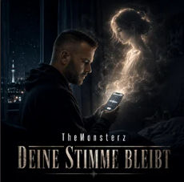
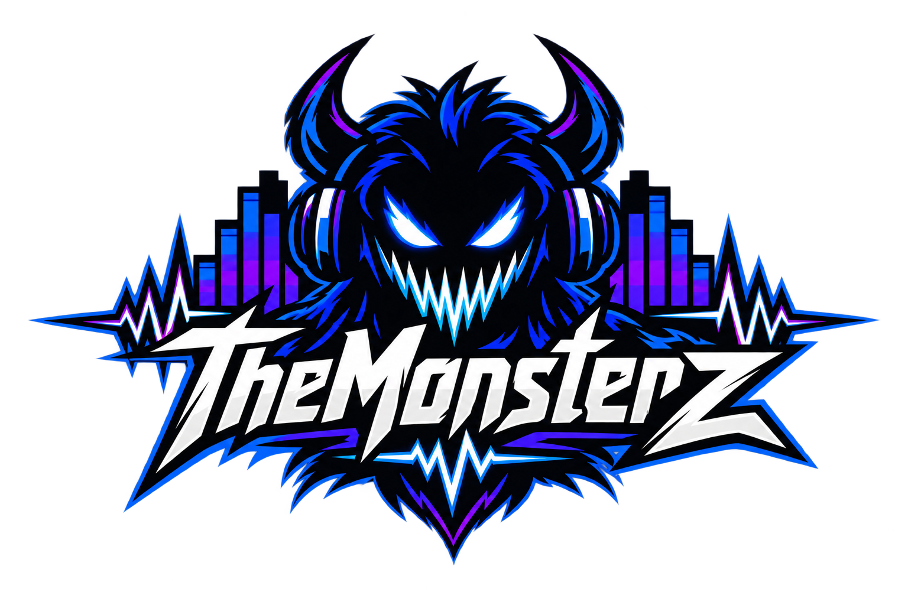
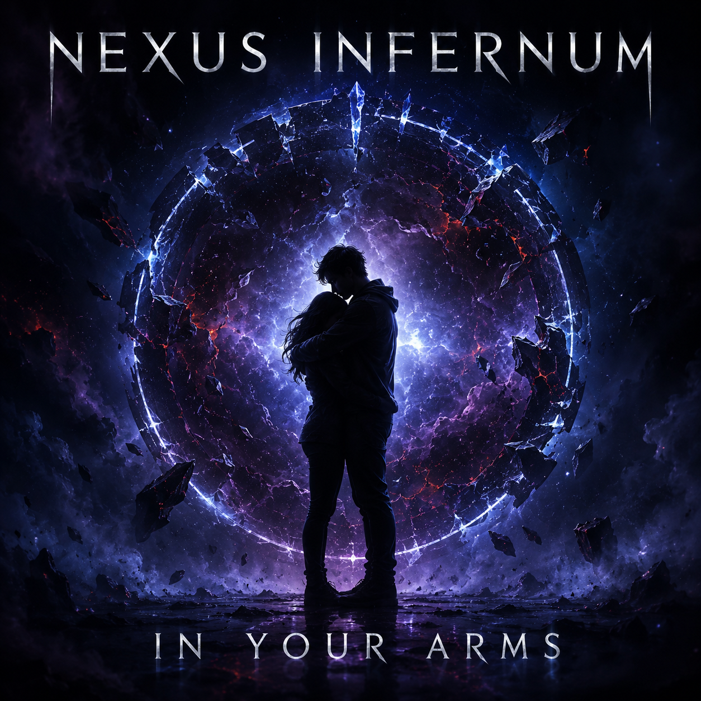
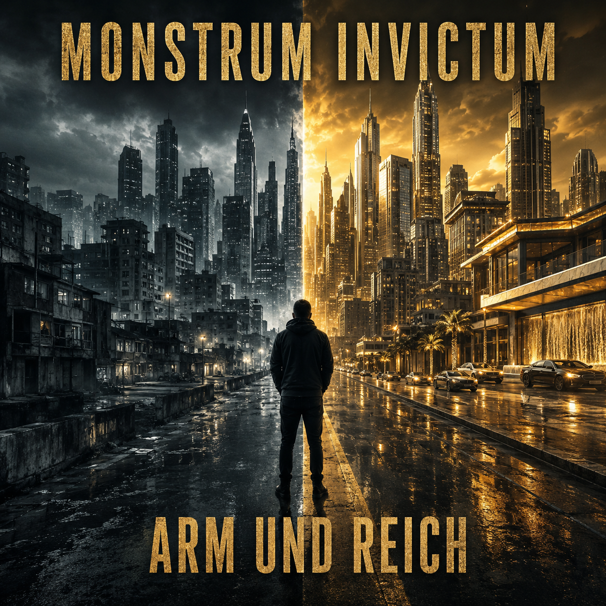

TheMonsterz
Deine Stimme bleibt
Die aktuelle Veröffentlichung von TheMonsterz – jetzt auf deiner bevorzugten Musikplattform anhören.
Hauptprojekt

TheMonsterz steht im Mittelpunkt – ergänzt durch die eigenständigen Musikwelten von Nexus Infernum und Monstrum Invictum.
Neueste Veröffentlichungen
Entdecke die aktuellen Veröffentlichungen von TheMonsterz sowie ausgewählte Songs von Nexus Infernum und Monstrum Invictum.

TheMonsterz
Die aktuelle Veröffentlichung von TheMonsterz – jetzt auf deiner bevorzugten Musikplattform anhören.


Meine Musikprojekte
Emotionale Musik mit Tiefgang zwischen Rock, Rap und modernen Sounds. Songs über Respekt, Freundschaft, Hoffnung und das, was im Leben bleibt.
TheMonsterz auf Spotify →Dunkle, atmosphärische Musik mit emotionalen Themen und einem filmischen Klangbild.
Nexus Infernum auf Spotify →Kraftvolle deutschsprachige Musik über gesellschaftliche Gegensätze, Ungerechtigkeit, Macht und das wirkliche Leben.
Monstrum Invictum auf Spotify →Über die Musik
Hinter TheMonsterz, Nexus Infernum und Monstrum Invictum stehen drei musikalische Identitäten mit unterschiedlichen Stimmungen und Schwerpunkten.
TheMonsterz bildet den Mittelpunkt. Die beiden weiteren Projekte schaffen Raum für andere Sounds, ohne ihre Verbindung zum gemeinsamen Ursprung zu verlieren.
Anhören & folgen
Alle drei Projekte direkt auf Spotify entdecken.